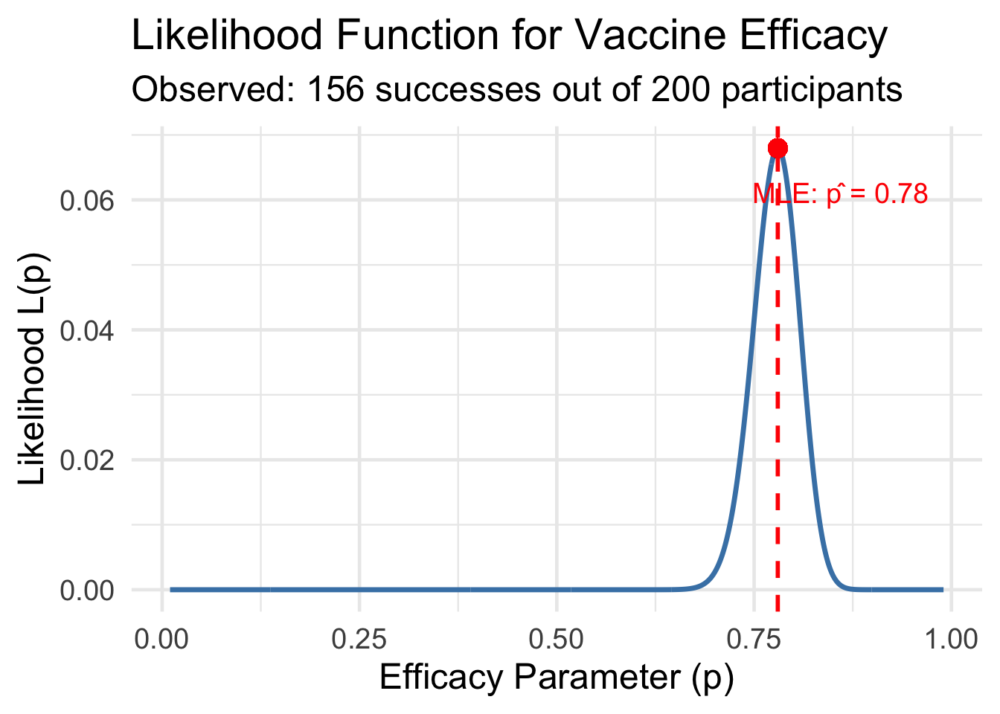
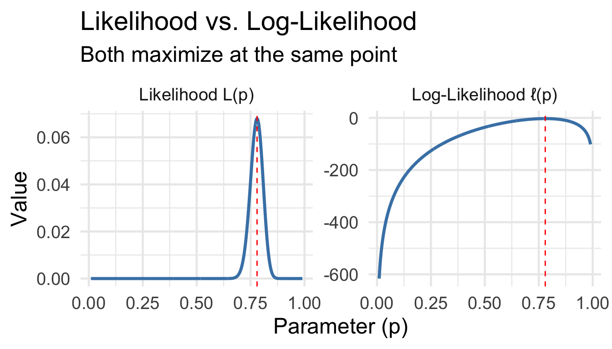
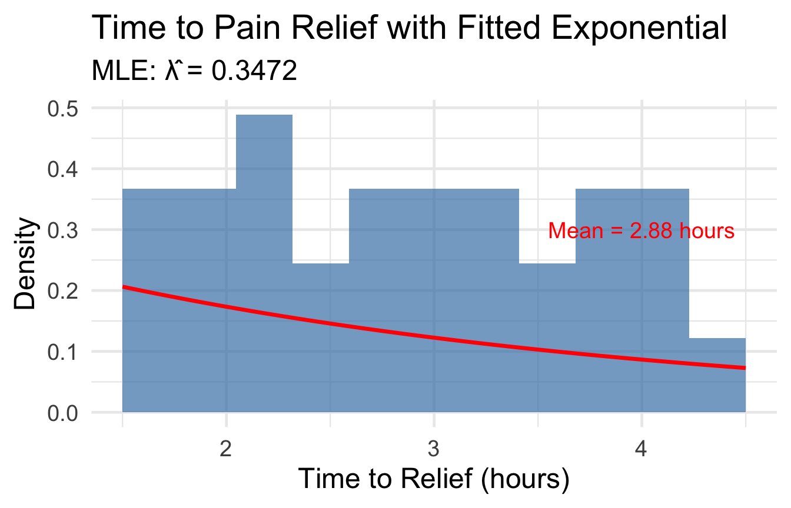
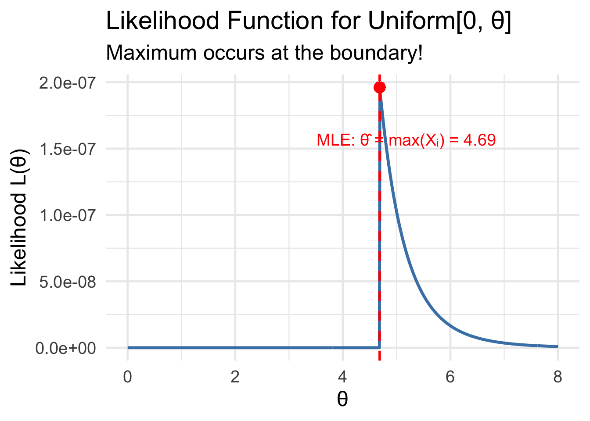
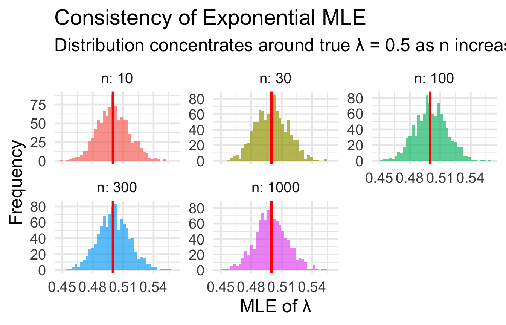
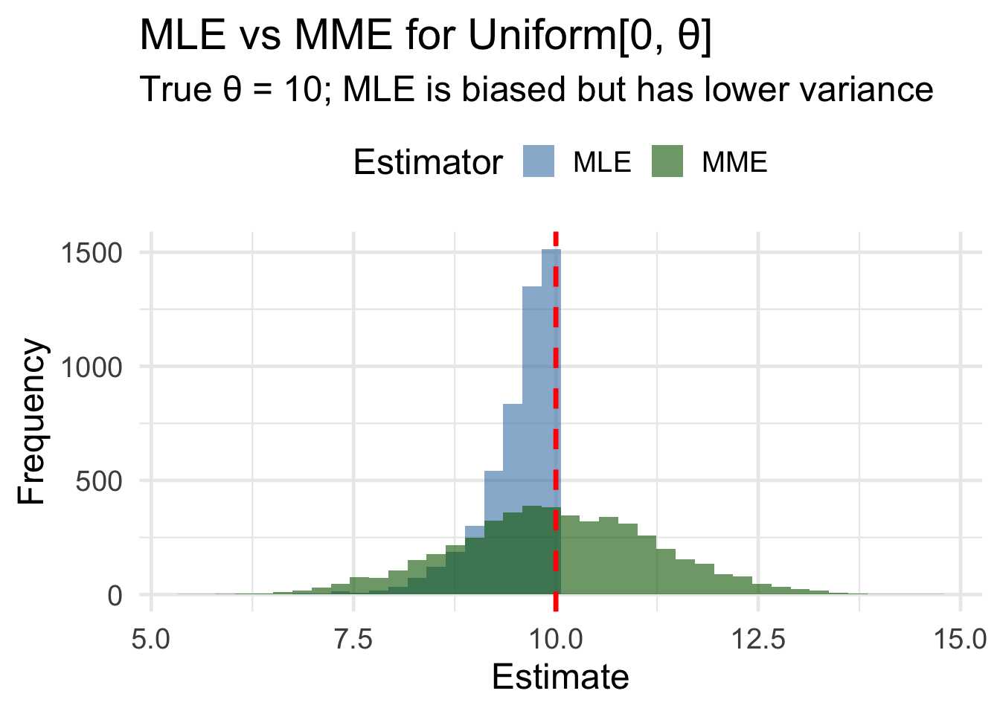

n <- 200
successes <- 156
# What value of p makes this outcome most "likely"?BSTA 551: Statistical Inference
Lesson 4: Likelihood Theory and Maximum Likelihood Estimation
Lesson 4: Maximum Likelihood Estimation
Review: Where We Left Off
Key concepts from Lesson 3:
- MVUE: Best unbiased estimator (smallest variance)
- Method of Moments: Equate population moments to sample moments
- MMEs are simple but not always most efficient
. . .
Today’s Goals:
- Understand the likelihood function and its interpretation
- Learn to derive Maximum Likelihood Estimators (MLEs)
- Explore properties of MLEs: invariance, consistency, efficiency
- Compare MLEs to MMEs
Motivating Example: Vaccine Efficacy
A clinical trial for a new vaccine enrolls 200 participants. After exposure to the pathogen, 156 remain disease-free.
. . .
Question: What is the true efficacy rate \(p\) of this vaccine?
. . .
Intuition: We should choose the value of \(p\) that makes our observed data “most likely” to have occurred.
. . .
This is the essence of Maximum Likelihood Estimation.
The Likelihood Function
From Probability to Likelihood
Probability vs. Likelihood: A Key Distinction
. . .
Probability (parameters fixed, data varies):
- Given a known parameter value \(\theta\), how likely are different data outcomes?
- Example: If \(p = 0.8\), what’s \(P(X = 156)\) out of 200?
. . .
Likelihood (data fixed, parameters vary):
- Given our observed data, how “likely” are different parameter values?
- Example: We observed 156 successes. Which value of \(p\) best explains this?
The Likelihood Function: Definition
ImportantDefinition (Devore 7.2)
Let \(X_1, \ldots, X_n\) have a joint distribution that depends on parameter \(\theta\). The likelihood function \(L(\theta)\) is this joint distribution, regarded as a function of \(\theta\) (with observed data held fixed).
For a random sample: \[L(\theta) = \prod_{i=1}^n f(x_i; \theta)\]
where \(f\) is the pmf (discrete) or pdf (continuous).
Visualizing Likelihood: Binomial Example

The MLE is the value of \(p\) at the peak of the likelihood function.
Maximum Likelihood Estimate: Definition
ImportantDefinition
The Maximum Likelihood Estimate (MLE) \(\hat{\theta}\) is the value of \(\theta\) that maximizes the likelihood function:
\[\hat{\theta} = \arg\max_\theta L(\theta)\]
The MLE is the parameter value that makes the observed data “most likely.”
. . .
Notation:
- \(\hat{\theta}\) is the MLE (estimator, a random variable)
- \(\hat{\theta}\) is also the mle (estimate, a specific number from data)
Why Maximum Likelihood?
Intuitive Appeal:
- Choose the parameter that “best explains” our data
- The data we observed should be highly probable under the true parameter
. . .
Theoretical Properties (more details later):
- Consistent: \(\hat{\theta} \to \theta\) as \(n \to \infty\)
- Asymptotically unbiased: \(E(\hat{\theta}) \approx \theta\) for large \(n\)
- Asymptotically efficient: Achieves smallest possible variance for large \(n\)
- Invariance: If \(\hat{\theta}\) is MLE of \(\theta\), then \(g(\hat{\theta})\) is MLE of \(g(\theta)\)
The Log-Likelihood Function
Why Use Log-Likelihood?
The likelihood function is often a product of many terms: \[L(\theta) = \prod_{i=1}^n f(x_i; \theta)\]
. . .
Taking the logarithm converts products to sums: \[\ell(\theta) = \ln L(\theta) = \sum_{i=1}^n \ln f(x_i; \theta)\]
. . .
Key property: Since \(\ln\) is monotonically increasing: \[\arg\max_\theta L(\theta) = \arg\max_\theta \ell(\theta)\]
Maximizing the log-likelihood gives the same answer!
Advantages of Log-Likelihood
Computational:
- Sums are easier to differentiate than products
- Avoids numerical underflow (very small products)
. . .
Mathematical:
- \(\ell'(\theta) = 0\) is often easier to solve
- Second derivative test is more tractable
. . .

The General MLE Recipe
TipFinding the MLE
Write down the likelihood: \(L(\theta) = \prod f(x_i; \theta)\)
Take the logarithm: \(\ell(\theta) = \sum \ln f(x_i; \theta)\)
Differentiate: Find \(\ell'(\theta) = \frac{d\ell}{d\theta}\)
Solve: Set \(\ell'(\theta) = 0\) and solve for \(\hat{\theta}\)
Verify: Check that \(\ell''(\hat{\theta}) < 0\) (maximum, not minimum)
MLE Examples
Example 1: Bernoulli Distribution
Setup: \(X_1, \ldots, X_n \sim \text{Bernoulli}(p)\) (iid)
Let \(x = \sum x_i\) be the number of successes.
. . .
Step 1 - Likelihood: \[L(p) = \prod_{i=1}^n p^{x_i}(1-p)^{1-x_i} = p^x(1-p)^{n-x}\]
. . .
Step 2 - Log-likelihood: \[\ell(p) = x\ln(p) + (n-x)\ln(1-p)\]
Example 1: Bernoulli (continued)
Step 3 - Differentiate: \[\ell'(p) = \frac{x}{p} - \frac{n-x}{1-p}\]
. . .
Step 4 - Solve: \[\frac{x}{p} = \frac{n-x}{1-p}\] \[x(1-p) = p(n-x)\] \[x - xp = np - xp\] \[x = np\] \[\hat{p} = \frac{x}{n}\]
. . .
The MLE is the sample proportion! This matches our intuition.
Simulation: Verifying the Bernoulli MLE
true_p <- 0.65
n <- 50
n_sims <- 5000
# Simulate many samples and compute MLE
mle_sim <- tibble(sim = 1:n_sims) |>
mutate(
successes = rbinom(n_sims, size = n, prob = true_p),
mle = successes / n
)
# Check unbiasedness and variance
mle_sim |>
summarize(
`True p` = true_p,
`Mean of MLEs` = mean(mle),
`Bias` = mean(mle) - true_p,
`Variance of MLEs` = var(mle),
`Theoretical Var` = true_p * (1 - true_p) / n
) |>
pivot_longer(everything()) |>
mutate(value = round(value, 5))# A tibble: 5 × 2
name value
<chr> <dbl>
1 True p 0.65
2 Mean of MLEs 0.649
3 Bias -0.00072
4 Variance of MLEs 0.00464
5 Theoretical Var 0.00455Example 2: Exponential Distribution
Setup: \(X_1, \ldots, X_n \sim \text{Exponential}(\lambda)\) where \(\lambda\) is the rate parameter.
Medical Context: Time until symptom relief (hours) for patients taking a new pain medication.
. . .
Step 1 - Likelihood: \[L(\lambda) = \prod_{i=1}^n \lambda e^{-\lambda x_i} = \lambda^n e^{-\lambda \sum x_i}\]
Step 2 - Log-likelihood: \[\ell(\lambda) = n\ln(\lambda) - \lambda \sum x_i\]
Example 2: Exponential (continued)
Step 3 - Differentiate: \[\ell'(\lambda) = \frac{n}{\lambda} - \sum x_i\]
. . .
Step 4 - Solve: \[\frac{n}{\lambda} = \sum x_i\] \[\hat{\lambda} = \frac{n}{\sum x_i} = \frac{1}{\bar{X}}\]
. . .
Note: This is the same as the MME! (Not always the case.)
Medical Application: Pain Relief Duration
# Time to pain relief (hours) for 30 patients
relief_times <- c(2.1, 3.5, 1.8, 4.2, 2.7, 1.5, 3.8, 2.3, 4.1, 2.9,
1.9, 3.2, 2.5, 3.9, 2.1, 4.5, 1.7, 3.4, 2.8, 3.1,
2.4, 3.7, 1.6, 4.0, 2.6, 3.3, 2.0, 3.6, 2.2, 3.0)
# MLE of rate parameter
lambda_mle <- 1 / mean(relief_times)
cat("Sample mean relief time:", round(mean(relief_times), 2), "hours\n")Sample mean relief time: 2.88 hourscat("MLE of λ:", round(lambda_mle, 4), "per hour\n")MLE of λ: 0.3472 per hourcat("Estimated median relief time:", round(log(2) / lambda_mle, 2), "hours")Estimated median relief time: 2 hoursVisualizing the Exponential MLE
tibble(time = relief_times) |>
ggplot(aes(x = time)) +
geom_histogram(aes(y = after_stat(density)), bins = 12,
fill = "steelblue", alpha = 0.7) +
stat_function(fun = dexp, args = list(rate = lambda_mle),
color = "red", linewidth = 1.2) +
labs(title = "Time to Pain Relief with Fitted Exponential",
subtitle = str_glue("MLE: λ̂ = {round(lambda_mle, 4)}"),
x = "Time to Relief (hours)", y = "Density") +
annotate("text", x = 4, y = 0.3,
label = str_glue("Mean = {round(1/lambda_mle, 2)} hours"),
color = "red", size = 5)
Example 3: Normal Distribution (Two Parameters)
Setup: \(X_1, \ldots, X_n \sim N(\mu, \sigma^2)\)
. . .
Likelihood: \[L(\mu, \sigma) = \prod_{i=1}^n \frac{1}{\sqrt{2\pi\sigma^2}} e^{-(x_i-\mu)^2/(2\sigma^2)}\]
Log-likelihood: \[\ell(\mu, \sigma) = -\frac{n}{2}\ln(2\pi) - n\ln(\sigma) - \frac{1}{2\sigma^2}\sum(x_i - \mu)^2\]
Normal MLEs: The Result
Taking partial derivatives and solving:
\[\hat{\mu} = \bar{X}\]
\[\hat{\sigma}^2 = \frac{1}{n}\sum_{i=1}^n (X_i - \bar{X})^2\]
. . .
WarningImportant Note
The MLE of \(\sigma^2\) divides by \(n\), not \(n-1\)!
This means the MLE is biased: \(E(\hat{\sigma}^2_{MLE}) = \frac{n-1}{n}\sigma^2\)
The bias is small for large \(n\), and we can correct it if desired.
Your Turn: Deriving the Normal MLE
Exercise: Verify that \(\hat{\mu} = \bar{X}\) is the MLE for \(\mu\) (treating \(\sigma\) as known).
Steps:
Write \(\ell(\mu) = -\frac{n}{2}\ln(2\pi\sigma^2) - \frac{1}{2\sigma^2}\sum(x_i - \mu)^2\)
Differentiate: \(\ell'(\mu) = ?\)
Set equal to zero and solve for \(\hat{\mu}\)
. . .
Solution: \[\ell'(\mu) = \frac{1}{\sigma^2}\sum(x_i - \mu) = \frac{n\bar{x} - n\mu}{\sigma^2}\] Setting to zero: \(n\bar{x} = n\mu\), so \(\hat{\mu} = \bar{X}\) ✓
Example 4: Uniform Distribution (A Complication)
Setup: \(X_1, \ldots, X_n \sim \text{Uniform}[0, \theta]\)
Likelihood: \[L(\theta) = \prod_{i=1}^n \frac{1}{\theta} \cdot \mathbf{1}(0 \le x_i \le \theta) = \frac{1}{\theta^n} \cdot \mathbf{1}(\max(x_i) \le \theta)\]
. . .
The problem: We can’t use calculus! The likelihood is:
- \(L(\theta) = 0\) if \(\theta < \max(x_i)\)
- \(L(\theta) = 1/\theta^n\) if \(\theta \ge \max(x_i)\)
The function decreases as \(\theta\) increases (when positive).
Uniform MLE: Graphical Solution

The MLE is \(\hat{\theta} = \max(X_1, \ldots, X_n)\)
Properties of MLEs
Property 1: Invariance Principle
ImportantMLE Invariance Principle (Devore 7.2)
If \(\hat{\theta}\) is the MLE of \(\theta\), then for any function \(g(\cdot)\):
\[\widehat{g(\theta)} = g(\hat{\theta})\]
The MLE of a function of a parameter is that function of the MLE.
. . .
Example: If \(\hat{\mu} = \bar{X}\) and \(\hat{\sigma} = \sqrt{\frac{1}{n}\sum(X_i-\bar{X})^2}\) are MLEs for normal parameters, then:
- MLE of \(\sigma^2\) is \(\hat{\sigma}^2\)
- MLE of the coefficient of variation \(\sigma/\mu\) is \(\hat{\sigma}/\hat{\mu}\)
Applying Invariance: Medical Example
A clinical trial measures cholesterol levels (mg/dL). Assume normal distribution.
cholesterol <- c(195, 210, 185, 220, 175, 230, 200, 188, 215, 205,
192, 218, 182, 225, 198, 212, 190, 208, 178, 222)
# MLEs for μ and σ
mu_mle <- mean(cholesterol)
sigma_mle <- sqrt(mean((cholesterol - mu_mle)^2)) # Note: dividing by n
# By invariance, MLE of P(X > 240) is:
prob_high <- 1 - pnorm(240, mean = mu_mle, sd = sigma_mle)
cat("MLE of μ:", round(mu_mle, 2), "mg/dL\n")MLE of μ: 202.4 mg/dLcat("MLE of σ:", round(sigma_mle, 2), "mg/dL\n")MLE of σ: 16.08 mg/dLcat("MLE of P(cholesterol > 240):", round(prob_high, 4))MLE of P(cholesterol > 240): 0.0097Property 2: Consistency
ImportantTheorem
Under general regularity conditions, MLEs are consistent:
\[\hat{\theta} \xrightarrow{P} \theta \quad \text{as } n \to \infty\]
The MLE converges in probability to the true parameter value.
. . .
Intuition: With more data, our estimate gets closer to the truth.
Demonstrating Consistency
true_lambda <- 0.5
sample_sizes <- c(10, 30, 100, 300, 1000)
consistency_sim <- map_dfr(sample_sizes, function(n) {
tibble(
n = n,
sim = 1:1000,
mle = map_dbl(sim, \(s) 1 / mean(rexp(n, rate = true_lambda)))
)
})
consistency_sim |>
ggplot(aes(x = mle, fill = factor(n))) +
geom_histogram(bins = 40, alpha = 0.7) +
geom_vline(xintercept = true_lambda, color = "red", linewidth = 1.2) +
facet_wrap(~n, scales = "free_y", labeller = label_both) +
labs(title = "Consistency of Exponential MLE",
subtitle = "Distribution concentrates around true λ = 0.5 as n increases",
x = "MLE of λ", y = "Frequency") +
theme(legend.position = "none")
Property 3: Asymptotic Normality & Efficiency
ImportantTheorem (Devore 7.4)
Under regularity conditions, for large \(n\):
\(\hat{\theta}\) is approximately unbiased: \(E(\hat{\theta}) \approx \theta\)
\(\hat{\theta}\) is approximately normal: \(\hat{\theta} \dot{\sim} N(\theta, \text{Var}(\hat{\theta}))\)
\(\hat{\theta}\) is asymptotically efficient: It achieves (approximately) the smallest possible variance among all unbiased estimators.
. . .
In practice: For large samples, the MLE is approximately the MVUE!
Comparing MLE and MME
When do they agree? When do they differ?
| Distribution | MLE | MME | Same? |
|---|---|---|---|
| Bernoulli(\(p\)) | \(\bar{X}\) | \(\bar{X}\) | ✓ |
| Exponential(\(\lambda\)) | \(1/\bar{X}\) | \(1/\bar{X}\) | ✓ |
| Normal(\(\mu\), \(\sigma^2\)) | \(\bar{X}\), \(\frac{1}{n}\sum(X_i-\bar{X})^2\) | \(\bar{X}\), \(\frac{1}{n}\sum(X_i-\bar{X})^2\) | ✓ |
| Uniform[0, \(\theta\)] | \(\max(X_i)\) | \(2\bar{X}\) | ✗ |
| Weibull | Numerical | Different | ✗ |
When MLE ≠ MME: Which is Better?
For Uniform[0, \(\theta\)]:
theta <- 10
n <- 20
n_sims <- 5000
uniform_comparison <- tibble(sim = 1:n_sims) |>
mutate(
data = map(sim, \(s) runif(n, 0, theta)),
mle = map_dbl(data, max),
mme = map_dbl(data, \(d) 2 * mean(d))
)
uniform_comparison |>
summarize(
`MLE Bias` = mean(mle) - theta,
`MME Bias` = mean(mme) - theta,
`MLE Variance` = var(mle),
`MME Variance` = var(mme),
`MLE MSE` = mean((mle - theta)^2),
`MME MSE` = mean((mme - theta)^2)
) |>
pivot_longer(everything()) |>
mutate(value = round(value, 4))# A tibble: 6 × 2
name value
<chr> <dbl>
1 MLE Bias -0.472
2 MME Bias 0.0041
3 MLE Variance 0.205
4 MME Variance 1.60
5 MLE MSE 0.428
6 MME MSE 1.60 The MLE has smaller MSE despite being biased!
Visualizing MLE vs MME

Computing MLEs in R
Using built-in functions:
# For distributions with known MLEs
normal_data <- rnorm(100, mean = 50, sd = 10)
cat("Normal MLE for μ:", mean(normal_data), "\n")Normal MLE for μ: 50.0771 cat("Normal MLE for σ:", sd(normal_data) * sqrt((100-1)/100))Normal MLE for σ: 10.60873. . .
Using optimization for complex cases:
# General approach: maximize log-likelihood
neg_log_lik <- function(lambda, data) {
-sum(dexp(data, rate = lambda, log = TRUE))
}
exp_data <- rexp(50, rate = 0.5)
result <- optimize(neg_log_lik, interval = c(0.01, 5), data = exp_data)
cat("\nExponential MLE for λ:", round(result$minimum, 4))
Exponential MLE for λ: 0.499Medical Application: Survival Analysis
Cancer survival times are often modeled with exponential or Weibull distributions.
# Survival times (months) for 40 patients
survival_times <- c(8.2, 15.3, 12.1, 6.8, 22.5, 9.4, 18.7, 11.3, 7.5, 25.1,
14.2, 10.8, 5.3, 19.6, 13.4, 8.9, 16.2, 11.7, 6.1, 21.3,
12.8, 9.1, 17.5, 7.8, 24.2, 10.3, 14.9, 8.4, 20.1, 11.9,
6.5, 18.3, 13.1, 9.7, 15.8, 7.2, 22.8, 12.4, 8.1, 19.2)
# Fit exponential distribution
lambda_mle <- 1 / mean(survival_times)
# Estimated survival probability at 12 months
surv_12 <- exp(-lambda_mle * 12)
cat("MLE of λ:", round(lambda_mle, 4), "per month\n")MLE of λ: 0.0748 per monthcat("Estimated median survival:", round(log(2)/lambda_mle, 1), "months\n")Estimated median survival: 9.3 monthscat("Estimated P(survive > 12 months):", round(surv_12, 3))Estimated P(survive > 12 months): 0.407Fitting More Complex Models
# Using MASS package for Weibull MLE
library(MASS)
# Fit Weibull distribution to survival data
weibull_fit <- fitdistr(survival_times, "weibull")
print(weibull_fit) shape scale
2.6634497 15.0888924
( 0.3251651) ( 0.9483643)# Compare fits
cat("\nExponential mean:", round(1/lambda_mle, 2), "months\n")
Exponential mean: 13.36 monthscat("Weibull mean:", round(weibull_fit$estimate["scale"] *
gamma(1 + 1/weibull_fit$estimate["shape"]), 2), "months")Weibull mean: 13.41 monthsYour Turn: MLE Practice
Exercise: A diagnostic test is administered to 80 patients. 64 test positive. Assuming the number positive follows a Binomial distribution, find:
- The MLE of the sensitivity \(p\)
- The MLE of the odds of a positive result, \(p/(1-p)\)
- The MLE of \(P(\text{at least 60 positive in next 80 patients})\)
. . .
Solutions:
- \(\hat{p} = 64/80 = 0.80\)
- By invariance: \(\widehat{p/(1-p)} = 0.80/0.20 = 4.0\)
- By invariance: \(\widehat{P(X \ge 60)} = P(X \ge 60 | p = 0.80)\)
1 - pbinom(59, size = 80, prob = 0.80) # P(X >= 60)[1] 0.8933956Summary and Looking Ahead
MLE Summary Table
| Aspect | Description |
|---|---|
| Definition | \(\hat{\theta} = \arg\max L(\theta)\) |
| Method | Maximize likelihood (or log-likelihood) |
| Invariance | MLE of \(g(\theta)\) is \(g(\hat{\theta})\) |
| Consistency | \(\hat{\theta} \to \theta\) as \(n \to \infty\) |
| Efficiency | Approximately MVUE for large \(n\) |
| Bias | May be biased for small \(n\) |
Lesson 4 Summary
Key Concepts:
- Likelihood Function: \(L(\theta) = \prod f(x_i; \theta)\)
- Probability of observed data as function of parameters
- Log-Likelihood: \(\ell(\theta) = \sum \ln f(x_i; \theta)\)
- Easier to maximize; same solution
- MLE Properties:
- Invariance, consistency, asymptotic normality
- Approximately unbiased and efficient for large \(n\)
- MLE vs MME:
- Often the same; MLE usually more efficient when different
Lesson 4 Practice Problems
(Devore 7.25) Derive the MLE for the parameter \(\theta\) of the pdf \(f(x; \theta) = (\theta+1)x^\theta\), \(0 \le x \le 1\).
(Devore 7.31) For normal measurement errors with known mean 0, derive the MLE of the variance \(\sigma^2\).
(Devore 7.34) For the shifted exponential \(f(x; \lambda, \theta) = \lambda e^{-\lambda(x-\theta)}\), \(x \ge \theta\), find the MLEs of both parameters.
Medical Application: In a vaccine trial, 45 out of 50 participants develop antibodies. Find the MLE of the seroconversion rate and construct an approximate 95% CI using the asymptotic normality of the MLE.
Homework Problems (Devore et al.)
From Chapter 7:
- Exercise 7.27: MLE derivation and application
- Exercise 7.29: Poisson MLE
- Exercise 7.31: Normal variance MLE
- Exercise 7.32: Gamma MLE equations
- Exercise 7.35: Exponential with censoring
Looking Ahead
Upcoming Topics:
- Sufficient statistics (Chapter 7.3)
- Fisher Information (Chapter 7.4)
- Large-sample properties of MLEs
- Confidence intervals (Chapter 8)
References
- Devore, Berk, and Carlton. Modern Mathematical Statistics with Applications (Springer). Chapter 7.2
- Chihara and Hesterberg. Mathematical Statistics with Resampling and R (Wiley). Chapter 6.
Questions?
Thank you!